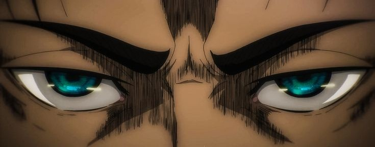
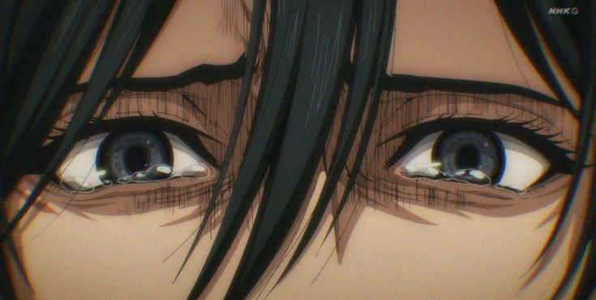
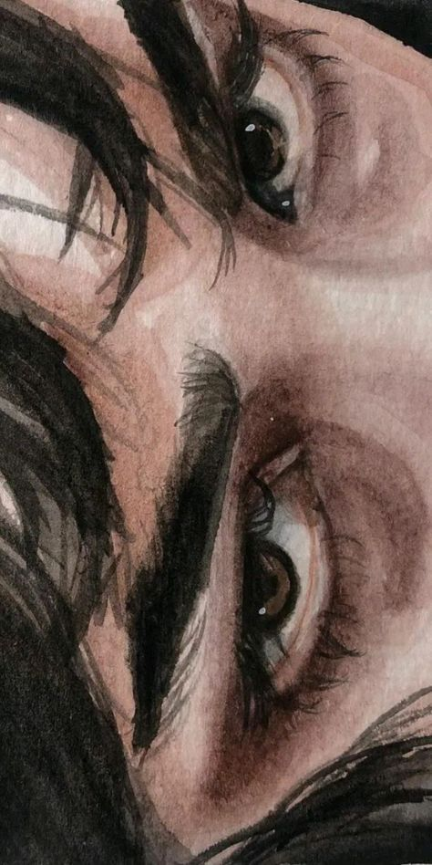

The eyes, the most human part of our body
Y no estoy hablando solo de mirar a alguien.
Estoy hablando de entender lo que hay detrás de la persona.
Porque las palabras pueden mentir.
Las promesas pueden mentir.
Pero los ojos…
Muestran deseo.
Muestran traición.
Muestran ambición.

A veces creemos conocer a alguien por lo que dice.
Pero la verdad suele esconderse en lo que no se dice.
En la forma en que mira.
En el silencio que deja después de hablar.
Porque las palabras pueden mentir.
Pero los ojos… nunca.


Creador-Carlos Alvarez
GitHubEste tema fue Inspirado en la Pelicula Scarface
Scarface